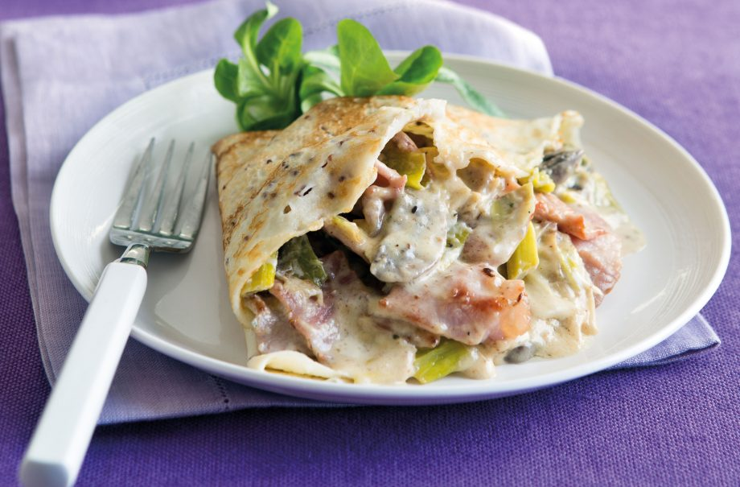

Chicken and leek pancakes recipe

Serves:
Prep:
Cooking:
Skill:
4-5
10 Min
10 Min
Easy
This delicious dinner staple is FODMAP diet friendly, thanks to cook book author Emma Hatcher, so you can keep enjoying classic dishes even if you’re on the FODMAP diet (plus it’s waistline friendly too!). It might look like it takes a while to put together but it’s mostly time in the oven, which means you can be getting on with other bits and bobs. Plus, we think it’s well worth the extra effort. Emma says: ‘I had reservations of calling this ‘lightened-up lasagne’, but there’s no better way to describe this dish that replaces wheat pasta with silky layers of butternut squash, making it gluten-free and lighter on the gut.’ Try it served alongside a kale based green salad.
The white sauce in this chicken and leek pancake recipe is flavoured with punchy mustard for a delicious kick that compliments the chicken beautifully. The best thing about this recipe is that it can almost entirely be made ahead of time, which is great for those days when you’re so busy you won’t have time to cook a full dinner from scratch but equally don’t want to resort to freezer food. To get everything ready ahead of time simply make up your crepes and sauce and warm both through before serving when needed.
Method
- Sauté 1 leek in a little oil for 2 mins, cover and cook for a further 3-4 mins or until tender. Transfer to a plate.
- Add 300ml milk, 25g butter and 3 tbsp plain flour to the pan, bring to the boil, whisking all the time until a smooth sauce forms. Simmer for 1 min.
- Remove from the heat and stir in 2 tsp wholegrain mustard, the leek and 225g cooked chicken cut into bite sized pieces.
- Season to taste and gently warm through until the chicken is hot. Divide the mixture between 4-5 warm pancakes and serve with salad.
Top tip for making Chicken and leek pancakes
Add a little extra kick to this pancake by adding some cooked bacon into your pancake filling